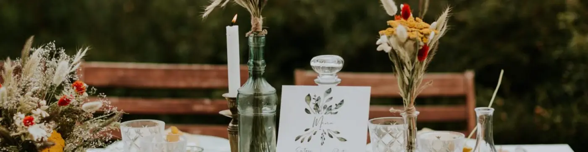

Le choix entre un mariage intimiste et un mariage gigantesque est un choix crucial, souvent source de désaccord pour les futurs mariés.

Un mariage intimiste
Le mariage intimiste offre une atmosphère chaleureuse et intime, permettant de partager des moments précieux avec un plus petit nombre d’invités, souvent la famille et les proches. Cela est souvent source de moins de stress pour le couple car il est plus facile à organiser et permet de profiter de chaque personne présente de façon unique et significative. De ce fait, il vous sera plus facile de consacrer du temps à chaque personne présente pour vous en ce jour de célébration. Aussi, le mariage intimiste est synonyme de moins de prise de tête et de moins de préparation au vu du plus petit nombre de convives.
Un mariage grandiose
À son contraire, le mariage gigantesque permet de rassembler un grand nombre de personnes pour une célébration plus spectaculaire et grandiose, avec une ambiance festive et électrisante. Cela permet également, aux futurs mariés, de montrer leur style et leur personnalité au travers d’une atmosphère mémorable et divertissante avec par exemple une grande et belle piste de danse, des décorations extravagantes et somptueuses et un lieu hors du commun ! En revanche, cela peut paraître plus complexe à organiser seuls en termes de logistique, de coordination ou de budget.

Avec mes qualités de wedding planner, mon rôle sera de vous aider à faire de ce jour si spécial un événement chaleureux, festif et rempli d’amour. Grâce à mes prestations je me chargerai de toute la coordination de votre mariage et ce jusqu’au jour J que ce soit la décoration de la salle, le planning ou les animations. Je ferais de ce jour le plus important et le plus beau de votre vie !
Que vous recherchiez un mariage intime ou grandiose, n’hésitez plus et contactez-moi par mail ou téléphone pour que l’on échange ensemble sur vos envies dans le but de créer des moments plein de magie, unique qui respire la joie de vivre et le bonheur.
- Alexandra Ambert
Lovely Day Event

Un choix crucial
Il est important de prendre en compte les envies et préférences personnelles de chacun de sorte à trouver une vision globale du mariage qui plaira aux deux futurs mariés. Que se soit au niveau du lieu, du budget ou de la vision du Jour J, réfléchissez à ce qui vous paraît le plus important pour votre mariage. Discutez avec votre partenaire et prenez en compte les souhaits et désirs de chacun.
Quel que soit le choix que vous ferez, rappelez-vous que le plus important lors du mariage, c’est l’amour et la complicité que vous vous portez mutuellement pour ce grand jour. Partagez, échangez, et célébrez ces moments inoubliables avec vos proches, vos familles et vos amis !
Et surtout écoutez-vous, discutez et suivez votre coeur !
Lovely Day Event c'est plusieurs types de prestations
L'organisation de mariage
Je vais intervenir sur toutes les étapes de vos préparatifs et vous guider dans vos choix. Je suis force de proposition pour que votre mariage ne ressemble qu’à vous.
Décoration de mariage
Créative et passionnée, je suis certifiée Wedding Designer et je conçois une ambiance scénographique qui correspond au thème de votre mariage.
Coordination le jour J
Je serai le chef d’orchestre pour gérer les différents prestataires, la mise en place de votre décoration et le déroulement de cette belle journée.